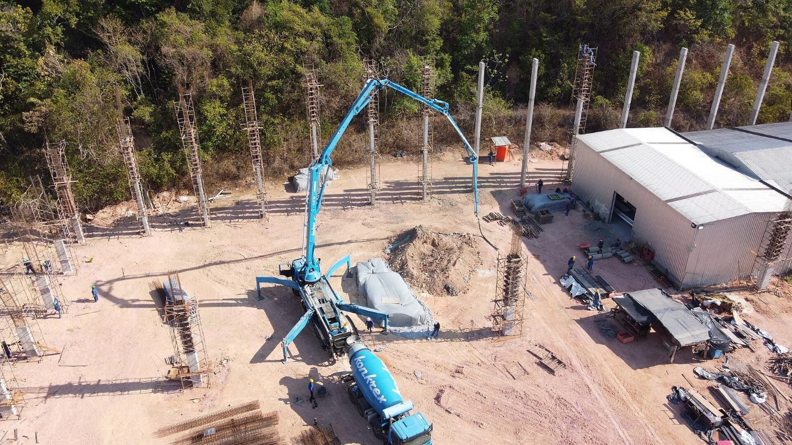

News
Results, projects, safety, communities: what we publish, in order.
27 August 2026Vertical mill reaches its rated 120 t/hPlant
Commissioned in May, the Matadi plant's new vertical mill reached its rated output on 21 August after three months of trials. It replaces ball mill no. 1 from 1974 and uses 30% less electricity per tonne.
Grinding capacity rises to 1.2 Mt/yr, above kiln capacity, allowing clinker imports at peak periods.
30 July 2026First half 2026: 486,000 tonnes sold, up 11%Results
Cement sales reached 486,000 tonnes in the first half, driven by Kinshasa construction and the opening of the Kikwit depot. Ready-mix concrete grew 24% to 61,000 m³.
The kiln ran 171 days out of 181, with a six-day planned stop in March.
18 June 2026Safety day: 1,200 days without a fatalitySafety
All 640 employees and 300 contractors took part in the annual safety day. The 2026 theme: truck movements inside the plant, the leading cause of near-misses recorded in 2025.
A new traffic plan separates pedestrians from heavy vehicles at bagging and bulk loading.
12 May 2026Five-year contract with SCTP for the Matadi–Kinshasa railwayLogistics
The company signed a five-year contract with the Société commerciale des transports et des ports to carry 300,000 tonnes of cement a year to the Limete terminal, three trains a week.
Rail removes about 9,000 truck journeys a year from national road no. 1.
3 April 2026Six new classrooms open at the Luvu schoolCommunities
The 420 pupils of Luvu primary school, next to the quarry, started the term in six rebuilt classrooms, with canteen, borehole and latrines. The work was awarded to a Matadi contractor.
The company will maintain the buildings for ten years.
10 March 2026Kikwit depot opensSales
The company's first depot outside Kinshasa and Kongo Central, the Kikwit depot holds 2,000 tonnes and serves retailers in Kwilu and Kwango. Posted prices match Kinshasa, transport included.
14 February 2026OCC certificate renewed for all three cementsQuality
The Office congolais de contrôle renewed the certificate of conformity for CEM I 42.5 R, CEM II/A-L 42.5 N and CEM II/B-L 32.5 R after a plant audit and tests on 36 samples taken from distributors.
5 December 2025Thirty scholarships for Kongo Central studentsCommunities
Thirty civil-engineering, electromechanical and chemistry students from the universities of Matadi, Boma and Kinshasa receive a full scholarship and a summer internship at the plant.
22 October 2025First barge convoy to MbandakaLogistics
Two 400-tonne barges left the Limete quay for Mbandaka, twelve days upstream. It is the company's first direct delivery to Équateur province, previously supplied through wholesalers.
8 September 2025Annual kiln stop: 18 days, 210 workersPlant
The Matadi kiln was stopped from 20 August to 6 September to replace refractory bricks, overhaul the cooler and inspect the shell. The stop passed without injury.
Press contact
presse@cimenterie-du-fleuve.cd · +243 81 000 00 00
Receive our releases